双闭环位置反馈控制
1. 概述
1.1 反馈方式比较
| 位置指令跟随 | 负载扰动静差 | 系统稳定性 | |
|---|---|---|---|
| 半闭环 | 能跟随 | 有静差，系统刚度越低，静差越大 | 稳定，能设置大增益 |
| 全闭环 | 能跟随 | 无静差 | 反共振频率有稳定性风险，只能设置较小增益 |
| 双闭环 | 能跟随 | 无静差 | 稳定，能设置大增益 |
双闭环控制结合两者的优势，既能够像半闭环一样设置大的增益参数，又能像全闭环一样消除负载扰动静差。
1.2 双惯量模型
关节模组的结构简化示意图如下，可以看成是双惯量系统。双编码器可以同时采集到与。
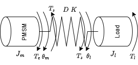
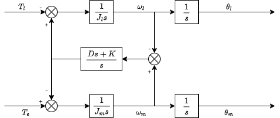
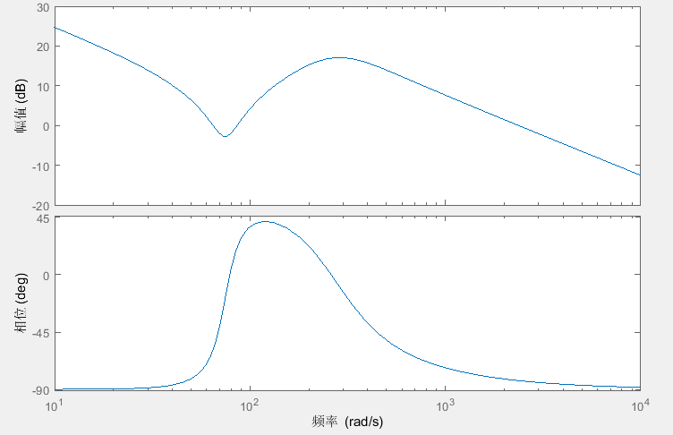
1.3 全闭环、半闭环与双闭环
1.3.1 单闭环
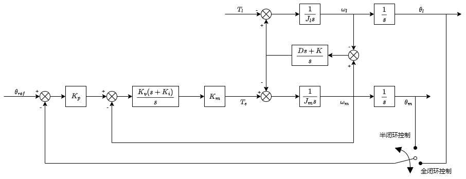
全闭环控制的优势是当负载受到负载端扰动 时，可以保证末端实际位置 与指令位置 无静差。
但如下图所示的全闭环控制的系统开环 bode 图可以看出，在反谐振频率点附近，幅频特性突变呈凸起态势。对比两种控制模式下抗谐振频率附近的幅频特性可以看出，高位置环增益会导致全闭环控制在抗谐振频率附近幅值增益的突增。因此，在实际应用中，为了避免系统产生超调和振荡， 全闭环控制的增益裕度要明显小于半闭环控制的增益裕度。（相位-180°时增益大于0dB不稳定）
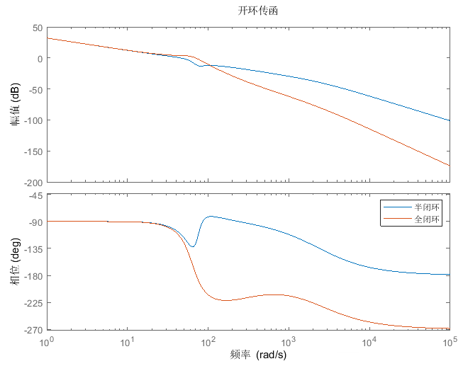
1.3.2 双闭环
双闭环控制采用一个互补滤波器，融合末端与轴端位置反馈。
当时，，为全闭环；当 时，，为半闭环；其余情况下，为双闭环。
双闭环控制主要解决的是全闭环可能导致的系统失稳产生的振荡。
调节低通滤波器的$$\tau
将 代入：
得到：
由Cramer法则得到：
设阻尼，整理得到：
其中：
2.2 稳态误差分析
对于阶跃响应，根据终值定理可得：
表明在没有负载端扰动时，跟随效果良好。
这意味着，对于负载端的扰动力矩 时，在无限长时间后，与指令位置 依然保持一个静差，且该静差与刚度系数成反比。
因此半闭环不能够完全消除位置静差，需要采取其他补偿方式。
2.3 稳定性分析
计算开环传递函数：
整体相位都在-180°以上，不存在稳定性问题。
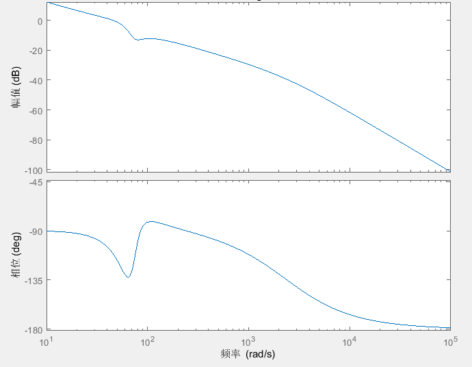
3. 全闭环控制
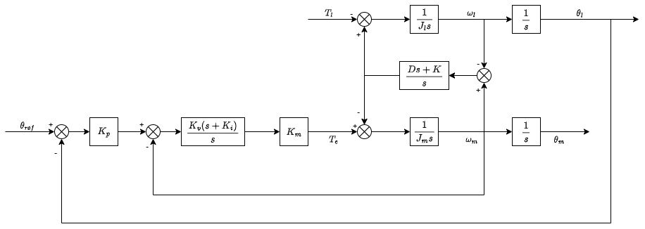
3.1 传函推导
由位置环、速度环，可得：
将 代入：
得到：
由Cramer法则得到：
设阻尼，整理得到：
其中：
3.2 稳态误差分析
对于阶跃响应，根据终值定理可得：
表明在没有负载端扰动时，跟随效果良好。
这意味着，对于负载端的扰动力矩 时，在无限长时间后，与指令位置 无静差。
因此全闭环能够完全消除位置静差。
3.3 稳定性分析
计算开环传递函数：
低频反共振点处可能存在稳定性问题。
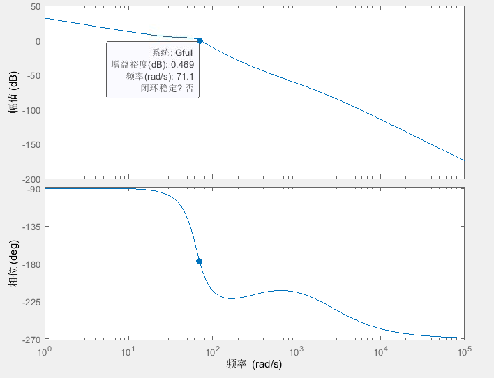
4. 双闭环控制
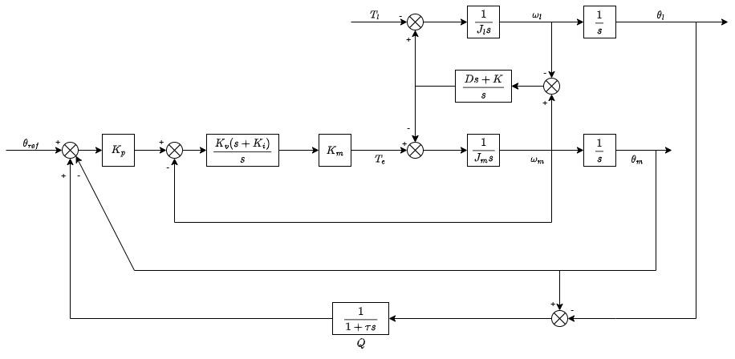
4.1 传函推导
由位置环、速度环，可得：
将 代入：
得到：
由Cramer法则得到：
设阻尼，整理得到：
其中：
4.2 稳态误差分析
对于阶跃响应，根据终值定理可得：
表明在没有负载端扰动时，跟随效果良好。
与全闭环相同，对于负载端的扰动力矩 时，在无限长时间后，与指令位置 无静差。
因此全闭环能够完全消除位置静差。
低通滤波器是用来协调半闭环与全闭环的融合滤波器。
只要，那么能够消除负载扰动造成的静差。且 越小，静差消除越快。
4.3 稳定性分析
计算开环传递函数：
双闭环低通滤波器带宽内更像全闭环，带宽外像半闭环。在危险频率处可以改善幅值和相位。
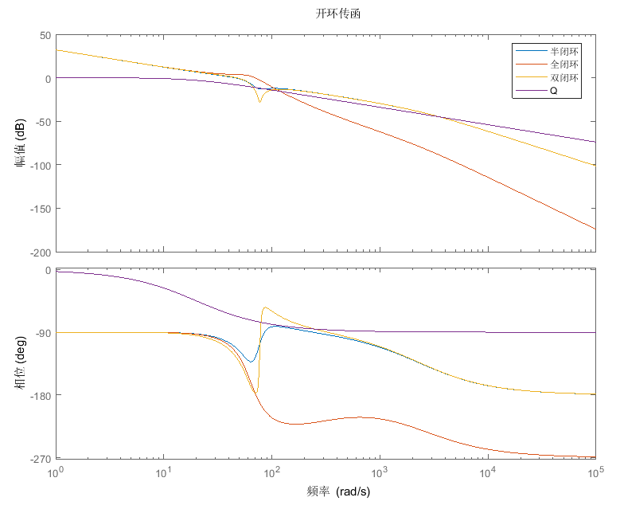
低通滤波器极点应该在反共振点附近。调谐时，若不了解系统，应该从 很大时开始调谐，逐渐减小，以获得更好的抗负载扰动能力。
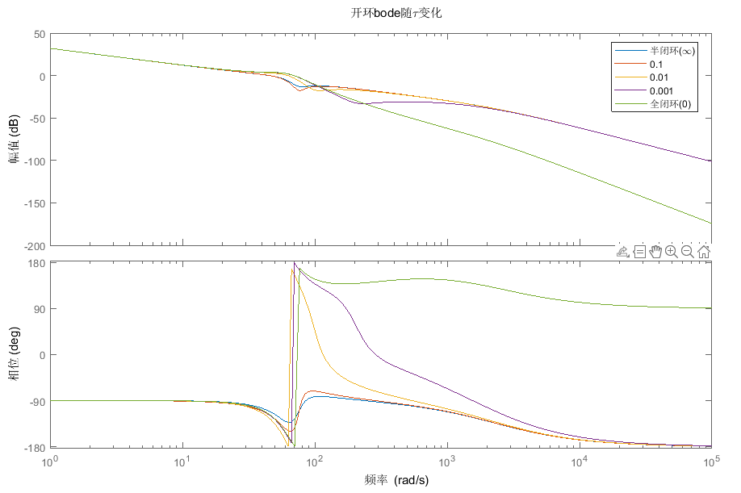
5. 仿真实验
参数如下：
| 0.000424 | |
|---|---|
| 0.0053 | |
| 40 | |
| 157.0796 | |
| 31.4169 | |
| 29.6041 | |
| 0.12 | |
| 0.05（对应反共振点） |
对于开环传函，在相位-180°处全闭环幅值在0dB附近，有稳定性风险。
危险频率为反共振点频率：
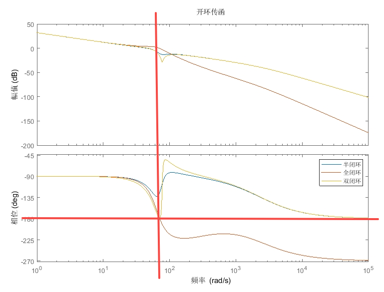
位置指令阶跃响应可以看出，全闭环振动较大，整定时间很长，双闭环效果虽然不如半闭环，但0.6s后也达到稳态。
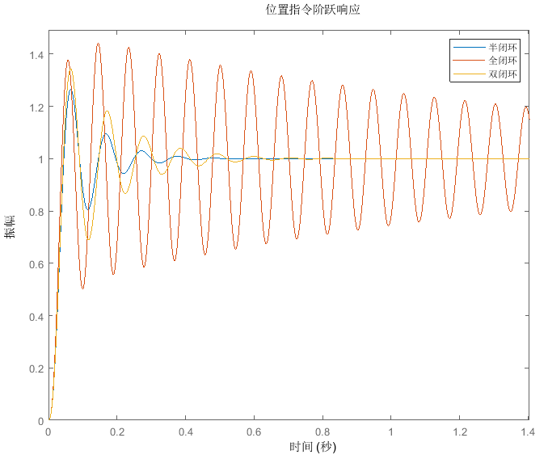
对于扰动的阶跃响应，半闭环稳定后有0.034的静差，全闭环振动过大，而双闭环控制能够做到无静差和较短的整定时间。
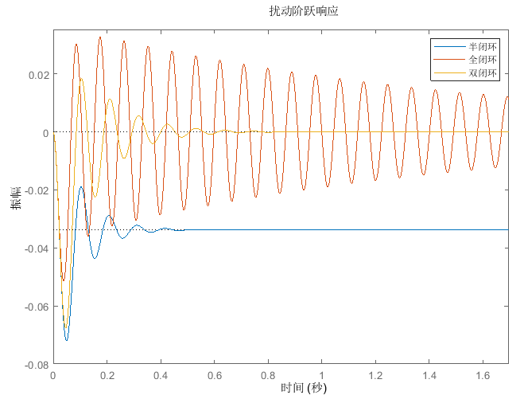